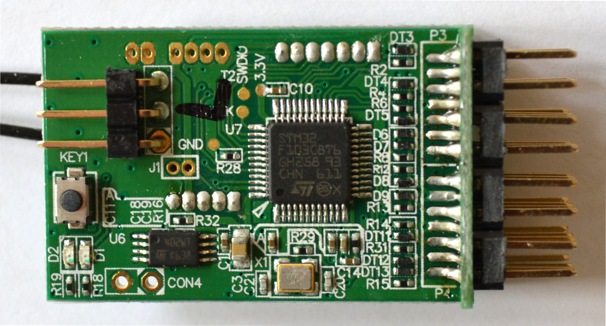
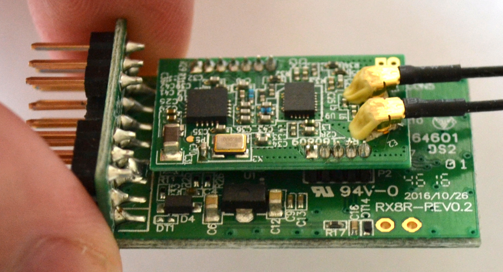

Inside the RX8R
The RX8R consists of a primary PCB and a radio submodule.
The top of the primary PCB has the F/S switch, several pads - GND, 3.3V, SWCLK and SWDIO (the text for SWCLK is largely obscured by a black mark) - and two sets of connections labelled CON4 and J1.

Primary PCB from the side (Smart Port pins are to the left).
Servo pins with the two S.BUS ports at the bottom.
Radio submodule on underside of primary PCB.
Radio submodule on underside of primary PCB from right side.
Radio submodule on underside of primary PCB from bottom edge.

Looking at the radio submodule from the top edge we can see two more sets of connections, these ones labelled CON2 and CON5.
Servo pins with the two S.BUS ports now at the top.
Looking at the underside of the radio submodule one can just make out another set of connections, labelled P3.
Closeup of P3.